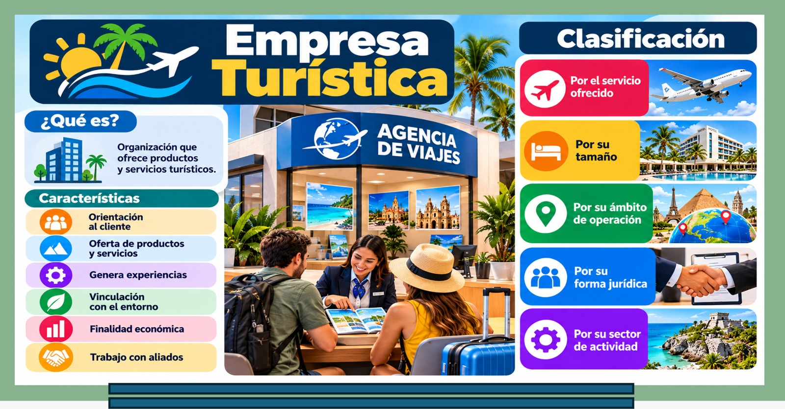

Unidad I · Tema 1.3
Empresa turística
La empresa turística combina recursos humanos, naturales y tecnológicos para generar experiencias. Sus rasgos distintivos de intangibilidad, inseparabilidad, caducidad y dependencia humana exigen una sólida filosofía y objetivos SMART bien definidos.
Video: Empresa
1.3.1Características de la empresa turística
Organización que combina recursos humanos, financieros, tecnológicos y naturales para ofrecer servicios y experiencias a los visitantes. Posee características fundamentales que la distinguen de otras industrias:
- Intangibilidad: aquello que no se puede ver y tocar ni probar.
- Inseparabilidad: todo aquello que se produce en la producción y el consumo ocurren simultáneamente.
- Heterogeneidad: cada experiencia es única.
- Caducidad: los servicios turísticos no se pueden almacenar.
- Estacionalidad: la demanda turística depende según las estaciones del año, generando temporadas altas, medias y bajas.
- Dependencia externa: el turismo es altamente vulnerable dependiendo de los factores que lo pueden afectar ya sea clima, seguridad, política, economía y contingencias sanitarias.
- Alta competencia: un destino puede ser atractivo dependiendo de la competencia con otros.
- Importancia del factor humano: el personal es el principal activo. La calidez y profesionalismo de un colaborador pueden transformar una experiencia ordinaria en un recuerdo inolvidable.
1.3.2Clasificación de las empresas turísticas
Las empresas turísticas se categorizan bajo diversos criterios operativos y estructurales:

La empresa turística es una organización que ofrece productos y servicios turísticos. La infografía la presenta en tres bloques: qué es, cómo se caracteriza y cómo se clasifica.
Por su función:
- Empresas de alojamiento: hoteles, moteles, hostales, casas rurales, campamentos y departamentos turísticos.
- Empresas de restauración: restaurantes, bares, cafeterías y servicios de banquetes/catering.
- Empresas de transporte: aerolíneas, líneas de autobuses, ferrocarriles, cruceros marítimos y arrendadoras de autos.
- Empresas de intermediación: agencias de viajes minoristas, turoperadores mayoristas y plataformas de reserva digital (OTAs).
- Empresas de ocio y entretenimiento: parques temáticos, museos, teatros y centros de turismo de aventura.
- Empresas de servicios complementarios: establecimientos de artesanías, casas de cambio, servicios médicos y empresas de seguros de viaje.
Por su tamaño:
- Microempresas: menos de 10 empleados.
- Pequeñas empresas: de 10 a 49 empleados.
- Medianas empresas: de 50 a 249 empleados.
- Grandes empresas: 250 o más empleados.
Espacio geográfico:
Lugares, áreas dentro y fuera del lugar a observar ya sea dentro o fuera del país de origen.
Naturaleza jurídica:
Empresas mixtas, cooperativas y asociaciones civiles.
1.3.3Fijación de metas y objetivos
Las metas y los objetivos son la brújula de la organización turística. Sin ellos no existe dirección estratégica ni parámetros claros de evaluación.
Características de los objetivos SMART:
- Específicos (Specific): claros y sin ambigüedades sobre lo que se espera lograr.
- Medibles (Measurable): cuantificables a través de indicadores concretos.
- Alcanzables (Achievable): realistas considerando los recursos y capacidades operativas.
- Relevantes (Relevant): directamente alineados con la misión y visión del negocio.
- Temporales (Time-bound): con un plazo o fecha límite de cumplimiento estipulado.
Tipos de objetivos en la empresa turística:
- De mercado: cuota de mercado, volumen de clientes y penetración en nuevos segmentos.
- De producto: desarrollo de experiencias innovadoras y mejora continua del servicio.
- De precio: posicionamiento tarifario, margen de rentabilidad y competitividad.
- De distribución: diversificación de canales, convenios comerciales y presencia en plataformas digitales.
- De comunicación: notoriedad de marca, reputación online y posicionamiento en buscadores.
- De recursos humanos: programas de capacitación, clima laboral y retención de talento.
- Financieros: incremento en ventas brutas, utilidades netas y retorno de inversión.
- De sostenibilidad: mitigación de huella ecológica y apoyo al desarrollo socioeconómico comunitario.
Ejemplos prácticos de objetivos formulados:
- Aumentar la ocupación hotelera anual del 65% al 75% en los próximos 12 meses.
- Incrementar el consumo promedio por comensal de $800 a $1,000 pesos durante el próximo semestre.
- Lograr que el 40% de las reservas totales ingresen a través del canal directo web en el siguiente año.
- Disminuir la huella de carbono de las excursiones en 15% en un periodo de dos años.
- Capacitar al 100% del personal de primer contacto en hospitalidad y atención al cliente en los próximos 6 meses.
1.3.4Filosofía empresarial: misión, visión y valores
La filosofía empresarial parte de los principios y convicciones que se establezcan y que sea lo que oriente a la empresa; representa el alma de la empresa turística y se conforma por tres pilares:
- Misión
- Hotel ecológico: "Ofrecer experiencias de descanso en armonía con la naturaleza, promoviendo cuidar los lugares que se visitan."
- Agencia aventura: "Diseñar y operar experiencias seguras y emocionantes que conecten a las personas con la naturaleza y consigo mismas."
- Restaurante turístico: "Servir platillos que celebren la cocina local, con ingredientes frescos y hospitalidad genuina."
- Visión
- "Ser el hotel ecológico referente en la región, reconocido por su sostenibilidad y autenticidad."
- "Convertirnos en la agencia de turismo de aventura líder del país con presencia en los principales destinos naturales."
- "Ser el restaurante predilecto por los viajeros que buscan la máxima autenticidad gastronómica en el destino."
- Valores
- Principios éticos que rigen la conducta diaria de los equipos.
- Respeto e integridad, trabajo en equipo, innovación, responsabilidad social, excelencia y sostenibilidad.